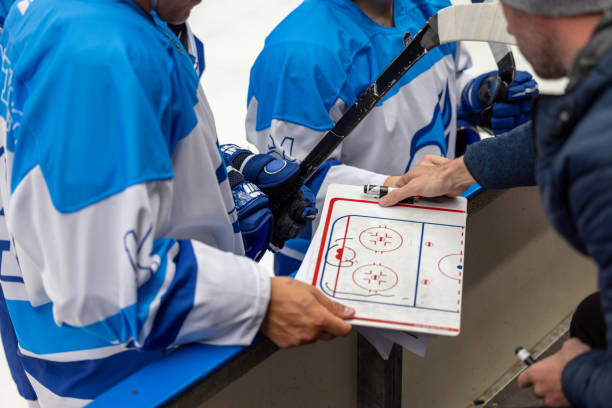
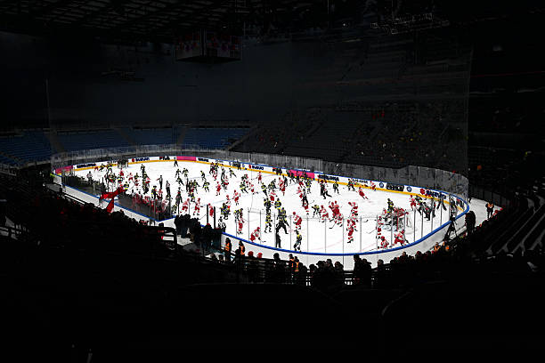
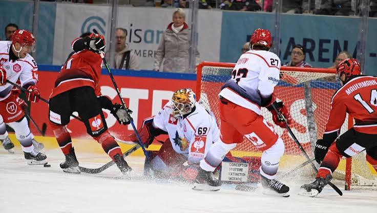

1. Historique du hockey sur glace

Le hockey sur glace est un sport collectif qui s'est développé au XIXe siècle au Canada. Le premier match organisé selon des règles modernes a eu lieu en 1875 à Montréal.
Le hockey masculin est devenu un sport olympique en 1920 et le hockey féminin en 1998. Aujourd'hui, il est pratiqué dans de nombreux pays, notamment au Canada, en Finlande, en Suède et en France.
En Lorraine, le hockey sur glace est également pratiqué dans plusieurs clubs. Il permet aux jeunes et aux adultes de découvrir un sport collectif basé sur la vitesse, la technique et l'esprit d'équipe.
2. Les règles du hockey sur glace

Le hockey sur glace oppose deux équipes qui doivent marquer des buts dans le camp adverse. Les joueurs se déplacent sur des patins et utilisent une crosse pour contrôler le palet.
- Chaque équipe possède 6 joueurs sur la glace, dont un gardien.
- Un match comporte 3 périodes de 20 minutes.
- Les joueurs utilisent une crosse pour déplacer le palet.
- Le gardien protège son but.
- Les contacts dangereux et les gestes interdits sont sanctionnés.
- Les changements de joueurs peuvent être effectués pendant le jeu.
- L'équipe qui marque le plus de buts gagne le match.
3. Les entraîneurs

Le club est encadré par une équipe d'entraîneurs expérimentés qui accompagnent les joueurs tout au long de la saison.
- Julien Morel : entraîneur principal des seniors. Il possède 12 ans d'expérience dans le hockey et organise les entraînements collectifs.
- Thomas Bernard : entraîneur adjoint des catégories jeunes. Il aide les joueurs à améliorer leur technique et leur maîtrise du palet.
- Antoine Lefèvre : entraîneur des gardiens de but. Il travaille les réflexes, les déplacements et les techniques d'arrêt.
- Camille Petit : responsable de l'école de hockey. Elle accueille les débutants et accompagne les plus jeunes dans leur progression.
Les entraîneurs organisent également des stages pendant les vacances scolaires afin de permettre aux joueurs de progresser.
4. Les catégories
Le club accueille des joueurs de tous les âges, des débutants aux joueurs confirmés. Les catégories sont réparties selon l'âge des participants.
| Catégorie | Âge indicatif |
|---|---|
| U7 | Moins de 7 ans |
| U9 | 7 à 8 ans |
| U11 | 9 à 10 ans |
| U13 | 11 à 12 ans |
| U15 | 13 à 14 ans |
| U18 | 15 à 17 ans |
| Seniors | Adultes |
Le club propose également des séances de découverte pour les personnes qui souhaitent essayer le hockey avant de s'inscrire.
5. Lieu d'entraînement

Les entraînements et les matchs à domicile se déroulent à la patinoire des Cèdres, située à Metz, en Moselle.
- Une grande surface de glace.
- Des vestiaires pour les joueurs.
- Des buts et des équipements de hockey.
- Des bancs pour les remplaçants.
- Des gradins pour accueillir les supporters.
- Un espace d'accueil pour les familles.
Nom : Patinoire des Cèdres
Adresse : 12 rue des Sports, 57000 Metz.
Ville : Metz, Moselle.
Accès : Parking disponible à proximité de la patinoire.
6. Jours d'entraînement
Les entraînements sont organisés en fonction de l'âge et du niveau des joueurs. Chaque catégorie dispose de plusieurs créneaux dans la semaine.
| Catégorie | Jour | Horaires |
|---|---|---|
| U7 | Samedi | 9h00 - 10h00 |
| U9 | Mercredi | 14h00 - 15h00 |
| U11 | Mardi | 17h00 - 18h00 |
| U13 | Mercredi | 16h00 - 17h30 |
| U15 | Jeudi | 18h00 - 19h30 |
| U18 | Vendredi | 18h30 - 20h00 |
| Seniors | Lundi et mercredi | 20h00 - 22h00 |
Les joueurs doivent arriver environ 20 minutes avant le début de leur séance afin de se préparer et de s'équiper.
7. Calendrier des matchs

Voici le du calendrier des rencontres du club pour cette saison 2026-2027.
| Date | Rencontre | Lieu | Heure |
|---|---|---|---|
| 22/11/2026 | Metz Hockey - Nancy Glace | Domicile | 14h00 |
| 29/11/2026 | Strasbourg Hockey - Metz Hockey | Extérieur | 16h00 |
| 06/12/2026 | Metz Hockey - Épinal Givre | Domicile | 15h00 |
| 13/12/2026 | Thionville Hockey - Metz Hockey | Extérieur | 14h00 |
| 20/12/2026 | Metz Hockey - Luxembourg Ice | Domicile | 17h00 |
8. Le hockey en vidéo
Découvrez une vidéo permettant de mieux comprendre le hockey sur glace, ses règles et son déroulement.
9. Nous contacter
Vous souhaitez inscrire votre enfant, découvrir le hockey ou obtenir des informations sur les entraînements ? Notre équipe est disponible pour répondre à vos questions.
E-mail : contact@metz-hockey.fr
Téléphone : 03 40 64 18 32
Responsable des inscriptions : Sophie Laurent.
Objet conseillé : Demande de renseignements ou inscription au hockey sur glace.
Nous accueillons les débutants comme les joueurs expérimentés tout au long de la saison.